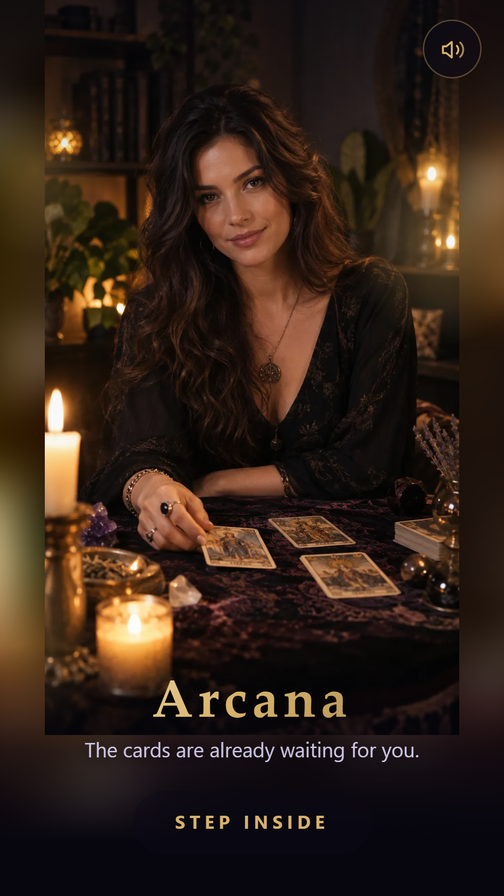
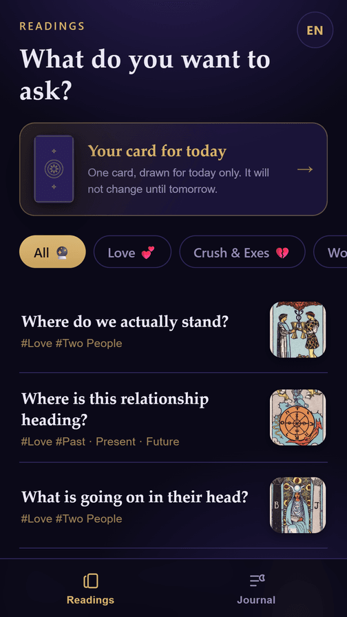
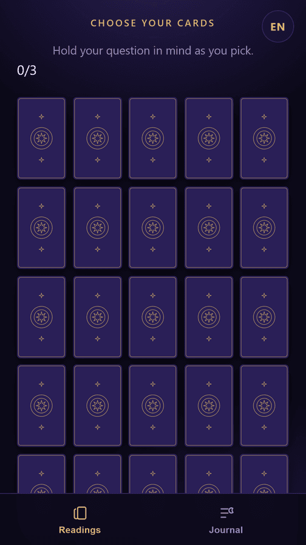
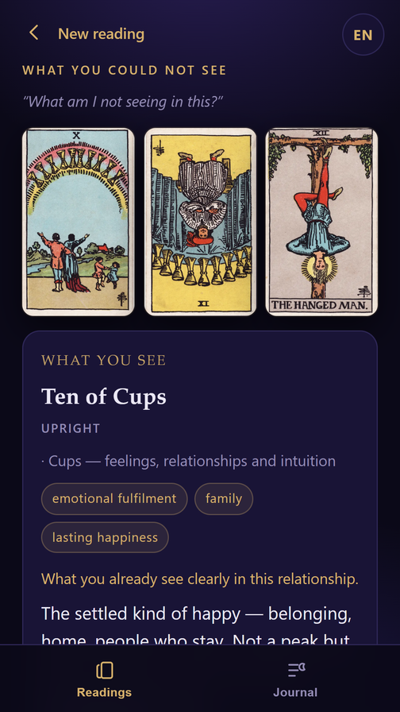

Arcana
주머니 속 타로카드 한 벌.
Google Play 에서 받기 무료 · 안드로이드 7.0+ · 계정 없음1909년 라이더-웨이트-스미스 덱 78장 전부를, 실제 타로 리더가 보는 방식 그대로. 계정도, 구독도, 리딩 도중에 끼어드는 결제 화면도 없습니다.
카드를 직접 뽑습니다
카드가 섞이고, 뒷면으로 눈앞에 펼쳐집니다. 고르는 건 당신입니다. 손가락이 닿기 전까지 아무것도 정해지지 않습니다 — 타로 리더와 마주 앉았을 때와 같습니다.




스프레드가 아니라 질문으로 묻습니다
타로를 처음 보는 사람에게 ‘과거·현재·미래’는 고를 근거가 없는 이름입니다. 그래서 아르카나는 무엇이 알고 싶은지를 먼저 묻고, 스프레드는 앱이 정합니다. 카드 자리도 질문에 맞춥니다 — ‘내가 놓치고 있는 건?’을 물으면 과거·현재·미래가 아니라 보이는 것 / 가려진 것 / 알아야 할 것에 카드가 놓입니다.
연애
지금 어떤 사이인가, 그 사람 마음, 무엇이 필요한가.
짝사랑·재회
먼저 다가가기, 연락 없는 이유, 놓아주기, 남은 것.
일·공부
무엇이 막고 있나, 나는 무엇을 잘하나, 어떻게 풀리나.
돈·선택
무엇부터 풀어야 하나, 지금 정말 중요한 것.
건강
진단이 아니라 마음을 들여다보는 자리예요. 몸에 관한 건 병원과 상의하세요.
오늘의 카드
하루 동안 고정. 아침에 뽑고 밤에 다시 봐도 같은 카드.
지어낸 해석이 아니라 계산된 해석
대부분의 타로 앱은 문장을 무작위로 고릅니다. 아르카나는 모든 리딩을 실제로 뽑힌 것에서 만듭니다 — 카드와 정·역방향, 놓인 자리, 메이저 아르카나가 몇 장인지, 역방향이 몇 장인지, 네 원소의 균형까지. 예·아니오 답도 동전 던지기가 아니라 카드마다 전통적으로 정해진 극성을 따릅니다.
9개 국어, 전부 번역
- English
- 한국어
- 日本語
- Español
- Português
- Русский
- Türkçe
- Français
- Deutsch
버튼만이 아니라 78장 전부가 각 언어로 쓰였습니다. 정방향과 역방향 모두, 카드 이름은 그 언어의 어법을 따릅니다.
처음부터 수집하지 않습니다
서버가 없고 로그인도 없습니다. 오늘의 카드, 기록, 설정은 전부 이 폰 안에만 있습니다. 입력하신 질문은 저장되지도, 어디로 전송되지도 않습니다. 리딩에 인터넷 연결이 전혀 필요 없습니다.